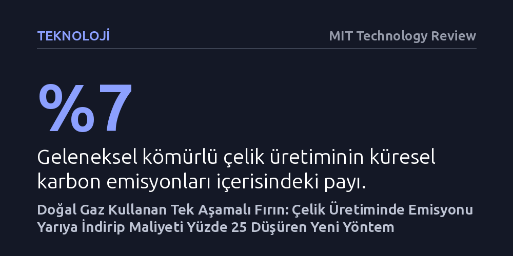

TEKNOLOJI · MIT Technology Review · 2026-09-09
Hertha Metals, kömür yerine doğal gaz kullanan tek aşamalı fırınıyla çelik üretim maliyetini yüzde 25, karbon emisyonlarını ise yarı yarıya düşürdü. Girişim, pahalı yeşil hidrojeni beklemeden ağır sanayide bugünden uygulanabilir ve kârlı bir dönüşüm sunuyor.
Ağır sanayiyi karbonsuzlaştırmak için henüz ekonomik olmayan kusursuz yeşil teknolojileri beklemek gerekmediğini, akılcı kimyasal yeniliklerle bugünden hem daha temiz hem yüzde 25 daha ucuz çelik üretilebileceğini gösteriyor.

Modern inşaatın, otomotivin ve küresel altyapının belkemiği olan çelik sektörü, teknolojik açıdan uzun süredir durağan bir yapıya sahip. Demir cevherinin saflaştırılarak kullanılabilir metale dönüştürülmesi süreci, ticari olarak yaygınlaştığı 1850'li yıllardan bu yana köklü bir değişim geçirmedi. Geleneksel üreticiler, katı demir cevherini yüksek fırınlarda aşırı yüksek sıcaklıklarda eriterek gazlarla tepkimeye sokuyor, oksijeni ayrıştırılan metali daha sonra inşaat demiri veya araç şasisi gibi ürünlere dönüştürmek için ilave arıtma aşamalarından geçiriyor.
Bu kadim sürecin ana yakıtı ve kimyasal indirgeyicisi ise kömür. Kömüre bağımlı bu yöntem, iklim krizine yol açan küresel karbon emisyonlarının yaklaşık yüzde 7'sinden tek başına sorumlu; bu oran neredeyse tüm moda endüstrisinin yarattığı kirlilikle eşdeğer. Sektörün dönüşümü ise son derece çetrefilli: Kar marjlarının oldukça dar olması ve kurulu yüksek fırınların onlarca yıllık hizmet ömrüne sahip bulunması, çelik devlerinin yeni ve pahalı temiz üretim teknolojilerine yatırım yapmasını ekonomik açıdan caydırıyor.
MIT makine mühendisliği doktoralı Laureen Meroueh tarafından 2022 yılında kurulan Hertha Metals, bu kilitlenmeyi aşmak için kimyasal süreci sadeleştiren yeni bir fırın mimarisi geliştirdi. Meroueh'in icadı, demir cevherini ara arıtma aşamalarına ihtiyaç duymadan doğrudan sıvı çeliğe dönüştürüyor ve fırının ana yakıtı olarak kömür yerine doğal gaz kullanıyor.
Bu yöntem iki kritik avantajı aynı anda sağlıyor: Karbon salımını standart çelik üretimine kıyasla en az yarı yarıya azaltırken, üretim maliyetlerini de yaklaşık yüzde 25 oranında aşağı çekiyor. Kar marjlarının son derece kısıtlı olduğu ağır sanayide maliyeti dörtte bir oranında düşürebilmek, temiz üretimi bir yük veya fedakarlık olmaktan çıkarıp doğrudan karlı bir iş modeline dönüştürüyor.
Yeşil çelik tartışmalarının merkezinde uzun süredir yeşil hidrojen yer alıyor. Demir cevherindeki oksijeni kömür yerine hidrojen kullanarak ayırma fikri teoride sıfır emisyon vaat etse de, hidrojenin astronomik maliyeti ve altyapı yetersizlikleri nedeniyle bu teknolojinin yakın gelecekte ticari ölçekte yaygınlaşması beklenmiyor. İdeal çözümü beklemek, sektörün her yıl milyarlarca ton karbon salmaya devam etmesine yol açıyor.
Hertha Metals ise sıfır karbonlu kusursuz bir sistemi beklemek yerine sektörün bugünkü sorunlarına pratik bir çözüm getirmeyi benimsiyor. Maliyetleri düşük tutabilmek adına geçici olarak doğal gaza dayanan bu yaklaşım, ileride yeşil hidrojen ucuzladığında mevcut fırın donanımında büyük bir değişikliğe gerek kalmadan tamamen karbonsuz bir sisteme geçiş yapabilecek şekilde tasarlandı.
Şirket, geliştirdiği yöntemi Teksas'ın Conroe kentindeki pilot tesisinde hayata geçirerek günde bir metrik ton sıvı çelik üretmeyi başardı. Khosla Ventures liderliğindeki yatırımcılardan Temmuz 2026 itibarıyla yaklaşık 20 milyon dolar toplayan girişim, rakiplerinin 50 ila 100 milyon dolarlık fonlarla dahi ulaşamadığı üretim hacmine çok daha az sermaye harcayarak ulaşmasıyla dikkat çekiyor.
Hertha, mevcut pilot tesisin yanına kurulacak yeni fabrikayla 2027 yılı sonuna kadar yıllık 10 bin metrik ton yüksek saflıkta çelik üretmeyi amaçlıyor. 2030 yılına kadar devreye alınması planlanan üçüncü bir tesisle hedeflenen yıllık üretim ise 500 bin metrik ton. Bu hacim, ABD'nin yıllık yaklaşık 80 milyon tonluk toplam çelik üretiminin yanında mütevazı bir pay kalsa da, geleneksel ağır sanayinin ekonomik olarak dönüştürülebileceğini kanıtlayan somut bir basamak niteliğinde.